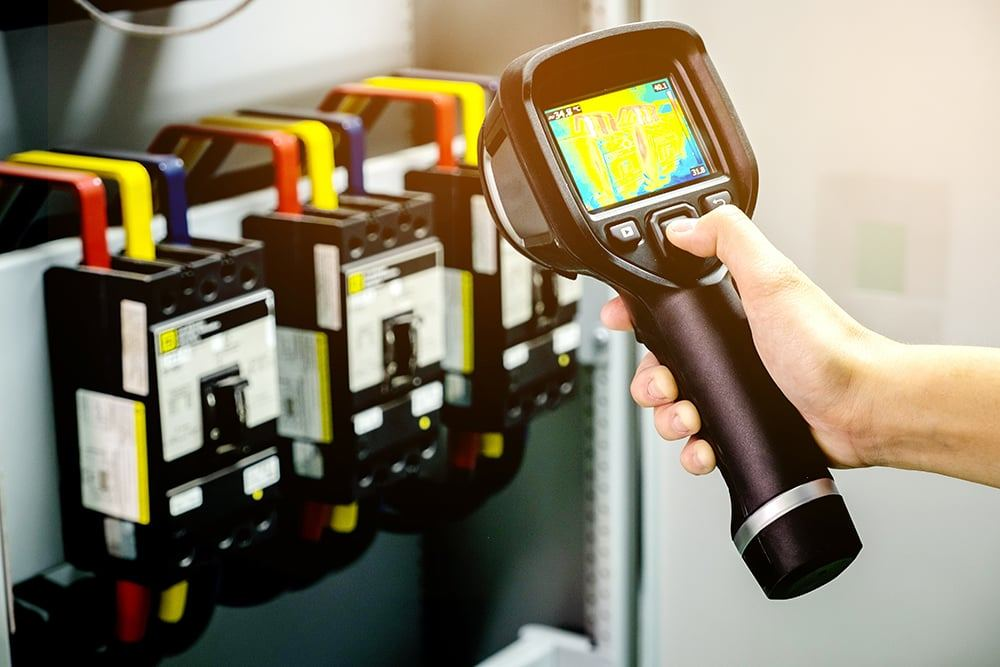
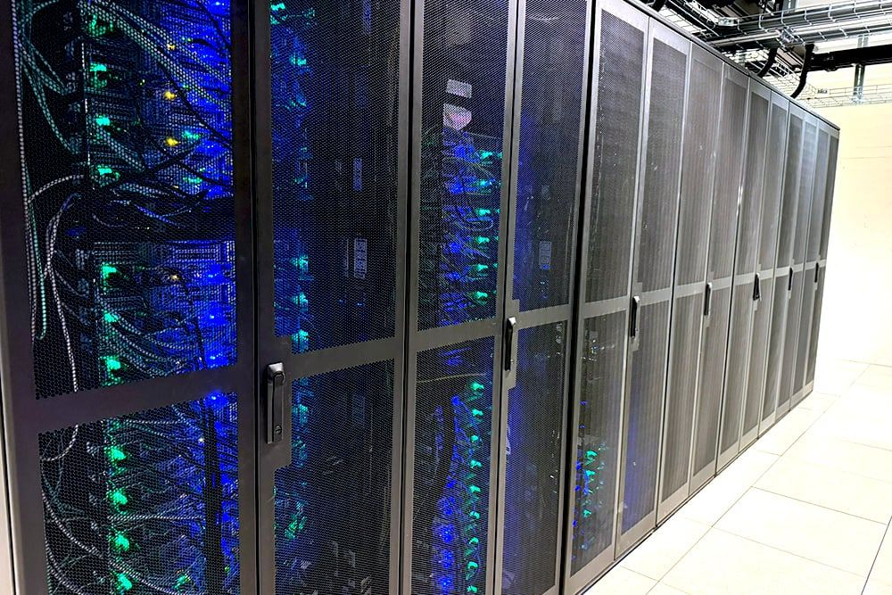

Datelco AS · Oslo
Fordi fremtiden er elektrisk.
Vi er en elektro-, EKOM- og systemleverandør som leverer smarte elektroløsninger for grønne bygg. Siden 1988 har vi vokst med markedene — og med kravene.
ElektroNettverkByggautomasjon24/7 vakt
24/7 elektrovakt
Strømbrudd meldt kl. 03.14 – rykket ut
UPS kontrollert – last testet
Feil på kurs 12 – isolert og utbedret
Neste planlagte service: torsdag
Sanntid · eksempeldata
- 1988
- året Datelco ble startet
- 35 år
- i elektro- og EKOM-bransjen
- 24/7
- elektrovakt hele året
- 9
- tjenesteområder
Det vi leverer.
Vi leverer smarte elektroløsninger for grønne bygg — fra sikringsskapet til datarommet.
Elektro
Installasjon, oppgradering og service på det elektriske anlegget.
02Nettverk
Kartlegging, installasjon og drift av datanettverk og wifi.
03Datarom
Rack, kabling og kjøling — rommet der alt annet henger sammen.
04Fibernett
Fiber for bygg og anlegg, med dokumenterte koblinger.
05Kritisk infrastruktur
UPS og løsninger der strømbrudd ikke er et alternativ.
06Brann og sikkerhet
Brannalarm, nødbelysning og adgangskontroll.
07Byggautomasjon
Styring som gjør bygget smartere, mer effektivt og bærekraftig.
08Service og vedlikehold
Fast vedlikehold og utrykning når noe stanser.
0924/7 elektrovakt
Vi svarer på strømbrudd og feil — også om natten.
Energieffektivisering er ikke et pålegg. Det er regnestykket.
Et godt byggautomasjonssystem gjør bygget smartere, mer effektivt og bærekraftig. Stadig flere eiendomseiere oppgraderer eldre bygg, og vi er en trygg partner i den prosessen.
- 01KartleggingVi ser på forbruk, styring og hva som faktisk kan spares.
- 02TermofotograferingVi avdekker feil som ellers ville utviklet seg videre — før de blir dyre.
- 03UPSDer det aldri skal være brudd på strømtilførselen, setter vi inn avbruddsfri strømforsyning.


Kun fornøyde kunder.
Vi arbeider med Norges mest krevende kunder og samarbeidspartnere. Det gjør at vi alltid må være i forkant av utviklingen, og hele tiden se etter de smarteste løsningene.
Kombinasjonen av krevende kunder — som arkitektene i Snøhetta og eiendomsbesittere som Statsbygg — og ambisiøse ansatte har bidratt til kulturbygging, sterkt løsningsfokus og grønn tankegang.
Etter 35 år er vi fortsatt i utvikling.
Datelco har siden starten i 1988 vokst og tilpasset seg nye markeder, og er nå en totalleverandør med en unik erfaring.
Elektro, styring og svakstrøm er fremtiden. Det er store behov i samfunnet — i offentlige bygg og institusjoner, i næringslivet og i private hjem — for energieffektivisering, sparing, miljøfokus og sikkerhet.
I dag er Datelco en anerkjent leverandør av smarte elektroløsninger for grønne bygg, med ekspertise på elbilladere, energieffektivisering, solceller og automatisering av bygg.
«Vi arbeider med Norges mest krevende kunder og samarbeidspartnere. Det gjør at vi alltid må være i forkant.»
Datelco AS
Har du et bygg som skal bli smartere?
Ta kontakt, så ser vi på anlegget og hva som kan gjøres — teknisk og økonomisk.